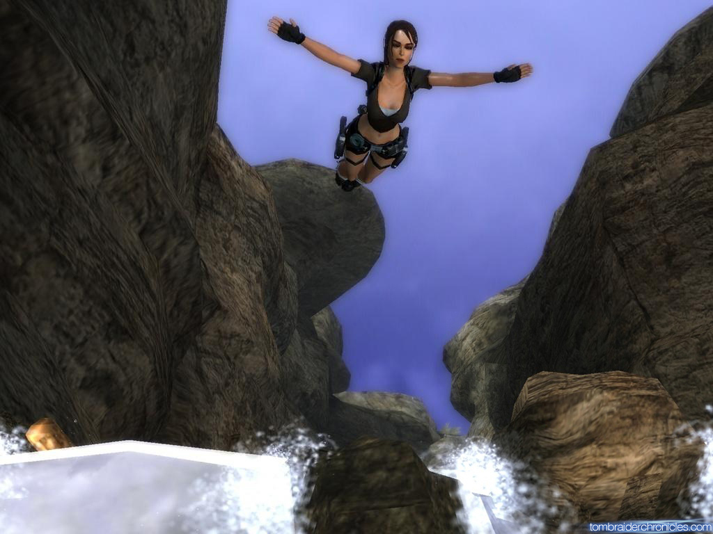

Git &
Version Control:
Demystified
Elizabeth Mitchell
What is version control?
Imagine you are designing a logo.
You start out with the main image file you are designing.
mopsie1.png
Let's say you reach a point in your design where
you want to try out something new
without impacting the old file.
So you save a copy.
mopsie2.png
And another copy
when you make a new change.
mopsie3.png
And another copy.
mopsie4.png
This can quickly become a tangle.
Image credit: Peter Raymond
Changing files the old fashion way
Number of changes: 3
Number of files: 4
Changing files the Git way
Number of changes: 3
Number of files: 1
Change 1 - Add fuzzy eyes
Change 2 - Make logo green and adjust feet
Change 3 - Make logo turquoise
When you are working on a project (a site, application, logo, book), it's messy and hard to keep track of multiple files and multiple folders. Especially if you are making copies of the same files with small tweaks.
Version control monitors the changes you make in a project and keeps record of your changes.
That way, instead of saving multiple file copies, you instead are saving your changes and making record of why you made those changes.
Getting Started with Git
Okay, I might see why this is important. How do we proceed?
Download Git
http://www.git-scm.com/downloads
Choose the appropriate installation for your computer.
The Trusty Command Line
Using Git on the command line
in the long-term will be easier for you.
The command line is a friendly* and useful tool for a developer.
But for many it's a bit* scary.
Some of its names: Git Shell/ Git Bash/ Command Line
* = The command line's friendliness may be questionable, but it doesn't have to be scary.
A Quick Dive Into the Command Line
Don't worry, my coding happy friend. Let's introduce some command line concepts that will be of help.
Useful Commands
cdChange directory - useful for moving from folder to folder.
lsList - lets you see the contents of a folder.
mkdirMakes a directory/ new folder.
How to leap across your files
Image Source: Tomb Raider Chronicles
ls - Find out where you are.
This lists the files in your current folder.
// user (Your current location)
ls
cd - Change directories.
This lets you move from folder to folder.
Move to your Documents folder.
// user
cd Documents
// user/Documents
Jump multiple folders at once.
// user/Documents
cd Folder/SubFolder
// user/Documents/Folder/SubFolder
cd ..
Takes you up one level/ out one level.
Can be combined with "/" to move quickly.
// user/Documents/Folder/SubFolder
cd ..
// user/Documents/Folder
cd ~
Takes you back to the main directory or root.
(Likely your username's main folder).
// user/Documents/Folder/SubFolder
cd ~
// user/
Tool Alternatives: GUIs
If you aren't comfortable with the command line, there are great tools to help you get started using Git.
Here are a few GUIs (graphical user interfaces) to get you started:
- List of Git recommended clients
- Popular: GitHub: Windows, Mac
- Popular: Atlassian SourceTree
Using these tools will help you understand how Git works and its main commands. Learning how Git works will allow you to apply it to the command line in the future.
Same language, different tools.
GUIs Can Be Helpful
Now that you know how to get started and have some command line tools under your belt, let's dive into using Git.
Image Source: Tomb Raider Chronicles
Git:
Useful Features
and Basic Setup
Setup
git config
Before you make your first commit (we'll get there), you will need to let Git know who you are. This is a bit like your fingerprint.
git config --global user.name "Mopsie Pie"
git config --global user.email "piemopsie@mopsiepie.co"
Note: --global applies to all projects. If you want to create settings just for one project, don't include --global.
Init
git init
Initializes a new Git project
This is you saying:
"Hey Git, I want you to keep track of my files in this folder."
Status
git status
This command asks Git what is currently happening with your files/repository.
It tells you what files are new or modified. With git status you know which branch you are currently working on.
Use often. Use frequently.
Commit
git commit
A commit is a change you record in your Git history.
It's a savepoint in your code base.
git commit -m "Add polka dots"
Commits
-m
Allows you to add a message. If you don't use the -m, another screen will pop up.
Don't do these things: bad commit messages.
(But do enjoy the humor.)
Here's a good guide for commits.
Stash
git stash
Commits are changes that get recorded into your code base. What if you don't want to make a commit, but just want to save where you are?
Like a checkpoint, git stash is useful. It saves your unfinished changes for you to return to later.
This is especially useful when switching between branches when you have unfinished work on each.
Log
git log
As you make changes, it will help to know what changes you have made in the past.
Use your up and down keys to navigate through your commit history.
Press q to exit.
Help, I'm Stuck!
When using command line Git, sometimes you will find yourself entering a new screen where you makes changes or comments.
CTRL X
To exit git log, use Q.
Search for an answer online if you get stuck! There are lots of useful resources out there!
Branches
git branch
Imagine you are working on a project. You reach a point where you need to work on a new feature or idea, but you want don't want to impact where you currently are at with your files.
A branch takes a snapshot of your files at a specific point and splits those new files off. You are free to morph those files as you like.
Making a new change? Thinking of trying a new approach?
Make a new branch first.
Think of it as a savepoint before you head down a new path.

Image Credit: Tomb Raider Chronicles
How to Make a Branch
Create a new branch
git branch awesome-new-feature
Create a new branch and hop over to it immediately
git checkout -b newbranchofjoy
List your current branches
git branch
Checkout
git checkout
Jump to a different branch.
git checkout mybranch
Merge
git merge
With your local branches, you will need to merge branches. This means that you bring the file changes of two separate branches together.
git checkout branch-changes-will-applied-to
git status
git merge branch-where-I-made-changes
Collaboration
Up to this point, we have looked at how Git might be helpful for a single user. What happens when multiple people are working on the same project and wish to collaborate?
Can you imagine how complicated it might be for a team of people to work on a project together? It would be a tangle.
Version control and good workflow (set guidelines for how people should integrate their files) helps make collaborating easier.
Because Git keeps track of which branch created which branch, timestamps, who made what changes, and the specific changes made to each file, it has a good memory of the history of your code.
It can make intelligent decisions about how to integrate files. Human eyes make the choices it cannot make.
Collaboration in git involves a remote repository. This remote repository is stored somewhere on a server. Users push (or send over) their changes to this remote repository. And they pull from it to request the most recent changes.
Clone
git clone
If you want to copy a preexisting project, you can use git clone.
This command takes the files from a project stored elsewhere. You create a new copy of those files on your computer with this command. Once you have a copy, you can work locally, as you have already learned to do, and make changes to those files.
git clone https://somegitsite.com/username/repo.git
Remote Branches
git remote
The branches on your own computer are your local branches. The branches sitting on another computer or server that serve as the main repositories are called remote branches. A good workflow with multiple users makes good use of remote branches.
Pull
git pull
A common way to get files from a remote branch is to use pull. This allows you to update the files on your own computer, pulling in the changes that have been made.
Push
git push
The opposite of a pull is push. When you are ready to integrate your changes to a remote repository, it's time to use push to get them there.
git push origin branch-you-are-pushingResources
Documentation
Git's Main Site: http://www.git-scm.com/
Git Documentation: http://git-scm.com/doc
GitHub Help: https://help.github.com/
Tutorials
Git Immersion: http://gitimmersion.com/
Try Git: https://try.github.io/